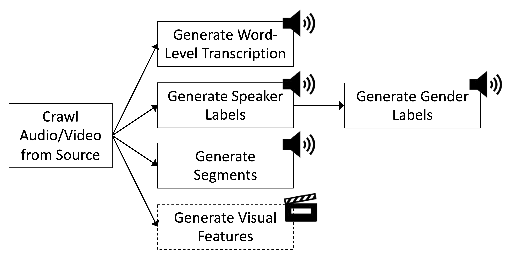
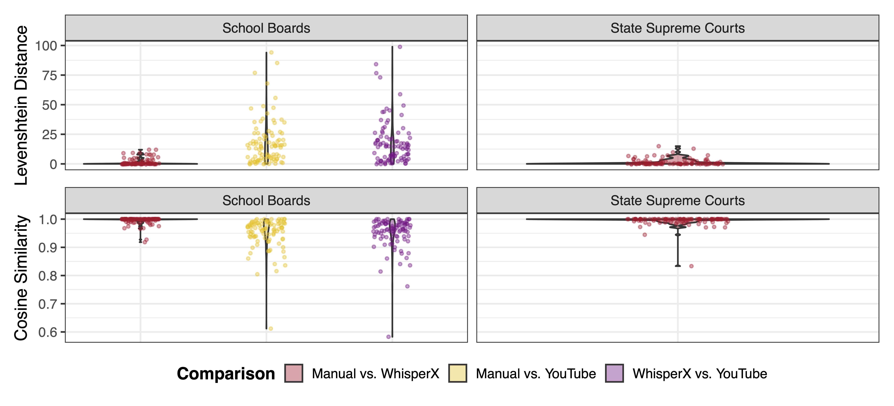
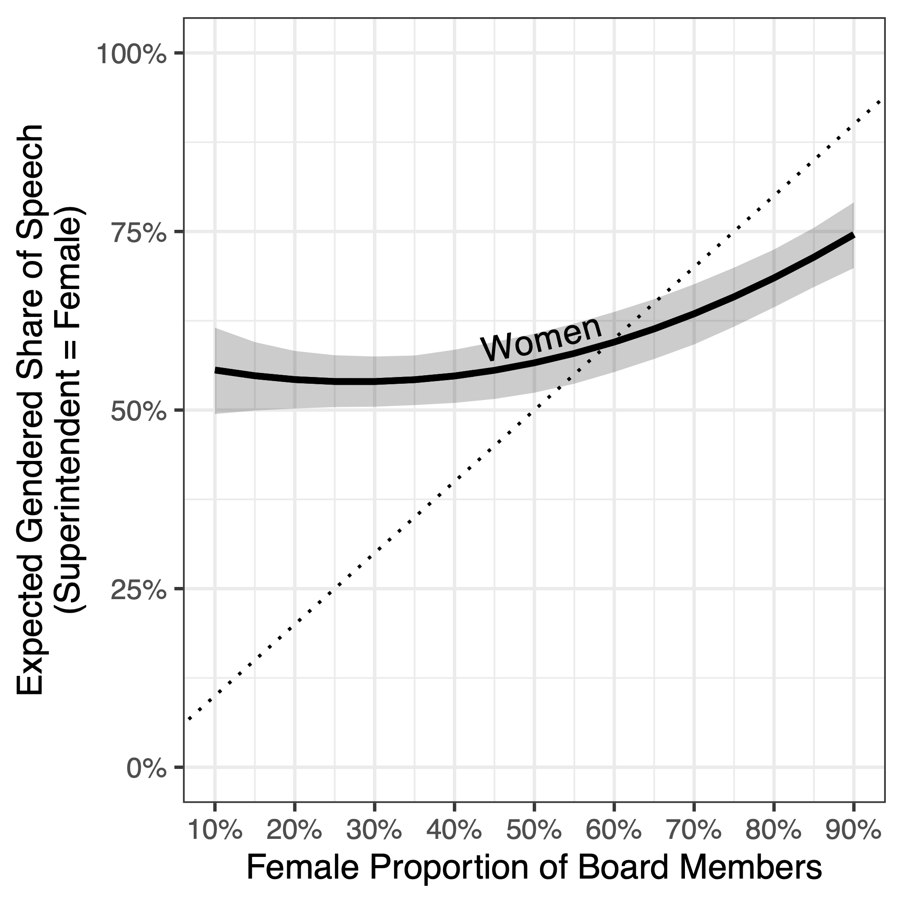
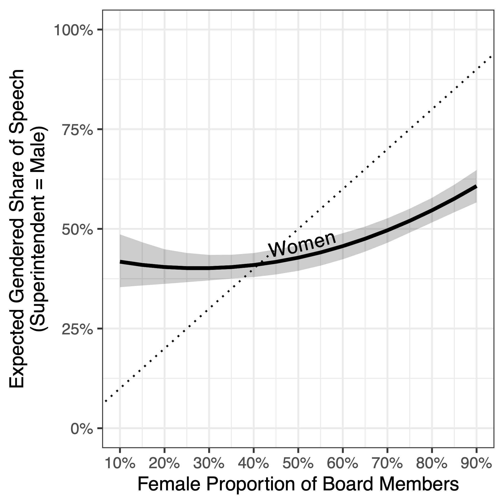

A Pipeline for Extracting Data from Videos of Complex Events
8th Annual COMPTEXT Conference (April 23-25, 2026) | University of Birmingham, UK
University of Houston
TU Darmstadt
University of Michigan


The Research Gap in Subnational Multimodal Political Communication
- Political scientists now regularly use audio, video, and text data to study deliberation, representation, and emotion
- But: existing work focuses largely on highly professionalized settings like national legislatures
- Many institutions are forced by law to make their work transparent
- Making video recordings of political processes available is often less effort than carefully post-processing and structuring what was discussed
Challenges and Opportunities
Subnational Policymaking is Hard to Study
- Data from subnational meetings is often not standardised
- No uniform reporting standard for meeting records, roll call votes, etc.
- Fortunately, full archives of video recordings of meetings are widely available on the institutions’ websites or YouTube
Useful Variation in Subnational Meetings
- Distributed within a country (easy to correlate with regional factors)
- Lots of over-time variation across institutions and within (e.g., school board composition, composition of justices)
- Many different actors (e.g., citizens during public comments or appellants in state supreme court meetings)
Our Study
What kinds of data can be extracted from political meetings videos, and how can these data be substantively used in political science research?
- Transcriptions
- Speaker diarization and gender classification
- Segment identification

Our Cases
- 1,000+ hours of video (YouTube)
- 30 School Boards (564 meetings)
- Focus on variation in board gender composition

- 1,500+ hours of video/audio (Court websites)
- 5 State Supreme Courts
- Data spanning 1996–2025

The Relevance of Subnational Meetings
US School Boards
- Oversee and develop curriculum of schools
- Set local tax rates (partially)
- Approve capital projects
- Negotiations for union contracts
US State Supreme Courts
- Ultimate authority over state constitutional interpretation
- Can invalidate state laws and executive actions
- Decide high-stakes election and redistricting cases
Transcription: What is Being Spoken?
Challenge: Local politics often does not produce any transcription but summarisation minutes or subtitles from YouTube.
Our Approach: WhisperX (Bain et al. 2023) transcribes on word-level with timestamps (1h of video = 85 seconds).

Word Error Rate: 0.009 (School Boards); 0.010 (State Supreme Courts)
Diarization: Who Speaks When?
Challenge: Local politics often does not have fixed speaker order or meta information about speakers.
Our Approach: pyannote (Bredin 2023) detects and aligns word-level speaker changes (1h of video = 30 seconds).
| Word | Start | End | Speaker ID | Speaker Change |
|---|---|---|---|---|
| we | 1460.49 | 1460.61 | speaker_b061 | 0 |
| have | 1460.67 | 1460.87 | speaker_b061 | 0 |
| the | 1460.93 | 1461.09 | speaker_b061 | 0 |
| superintendent | 1461.17 | 1461.73 | speaker_b061 | 0 |
| report. | 1461.77 | 1463.18 | speaker_b061 | 0 |
| Because | 1463.88 | 1464.14 | speaker_a69c | 1 |
| we | 1464.18 | 1464.28 | speaker_a69c | 0 |
| met | 1464.34 | 1464.46 | speaker_a69c | 0 |
| last | 1464.52 | 1464.70 | speaker_a69c | 0 |
95.74% of predicted speaker changes accurate (DER: 3.79% (School Boards), 3.38% (State Supreme Courts))
What are Gendered Shares of Speech?
Challenge: Because of lacking meta information, we often do not know about gendered dynamics in local political meetings.
Our Approach: A fine-tuned wav2vec model assigns gender labels to audio segments (1h of video = 10 seconds).
What Agenda Items Were Discussed and for How Long?
Challenge: Even though some institutions publish an agenda, we don’t know what is actually discussed during particular agenda items.
Our Approach: Open-weight LLM LLaMA 3.1 (8B) generates agenda items and aligns them with start/end timestamps (1h of video = 7 seconds).
| Item name | Meeting minutes | Zero shot | One shot |
|---|---|---|---|
| Front matter | 0:07:23 | 0:07:23 | |
| Call to order | 0:00:00 | 0:07:23 | 0:07:23 |
| Pledge of allegiance | 0:00:22 | 0:07:39 | |
| Approval of minutes | 0:01:16 | 0:08:33 | 0:08:33 |
| Communications | 0:01:39 | 0:08:56 | 0:08:56 |
| Public comment/public hearing on 2024–25 budget | 0:16:47 | 0:24:04 | 0:24:04 |
| Consent items | 0:16:58 | 0:24:15 | 0:24:15 |
| Action items | 0:17:30 | 0:24:47 | 0:24:47 |
| BOE planning/new business | 0:55:47 | 1:03:17 | |
| Adjournment | 0:58:47 | 1:03:43 |
Application: Women’s Representation and Speaking Time
Does the gender composition of school boards translate into gendered speaking time during meetings?
- Gender of board members and superintendent hand-coded at the year level
- DV: Share of speech by women; Predictor: proportion of female board members (quadratic relationship expected)
- Separate estimates for female vs. male superintendents
Application: Key Findings


- Non-linear “critical mass” effect: Women’s speech share increases sharply once female board membership exceeds ~50%
- Staff and clerks explain the floor: Even in heavily male-dominated boards, women’s speech share stays ~50% which reflects administrative staff, clerks, and report authors, who are disproportionately women
Conclusion
- Subnational multimodal political communication remains limited by data access and processing challenges
- Open-source pipeline creates transcripts, diarized speech, gender labels, and segment timestamps from video data
- Dataset: 2,500+ hours of diverse video data (validated on various dimensions)
- Application: non-linear critical mass effect and staff composition shapes women’s speaking time
Limitations
- Gender classifier captures perceived gender from vocal cues but not self-identified gender, binary only
- GPU resources required; disparities in access across institutions remain
- Scene detection unreliable for this type of video
A Pipeline for Extracting Data from Videos of Complex Events | 8th Annual COMPTEXT Conference (April 23-25, 2026) | April 25, 2026